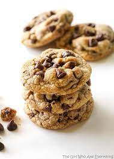

Chocolate Chip Cookies
Chocolate Chip Cookies

Description
My take on the original toll house chocolate chip cookie recipe. I use brown butter, age the cookie dough, and broil the cookies before baking them to cook the outside of the cookies while leaving the interior gooey.
Tips
- Use brown butter! Brown butter adds a deep, toffee-like flavor to the cookies that increases their complexity.
- Sweet and Salty is the way. Up the salt content a bit to enhance the flavor of the chocolate chips and contrast with the sweetness of the cookies.
- Baked on the outside, perfectly gooey on the inside. Broil the cookie dough very briefly and bake them closer to the bottom of the oven. This will set the tops and bottoms of the cookies while leaving them gooey inside.
Ingredients
- Dry
- 2.25 cups of AP flour
- 1 tsp baking soda
- 1 tbsp ksoher salt
- Wet
- 0.75 cups white sugar
- 0.75 cups brown sugar
- 1 cup brown butter, see this recipe.
- 2 eggs
- 1 tsp vanilla extract